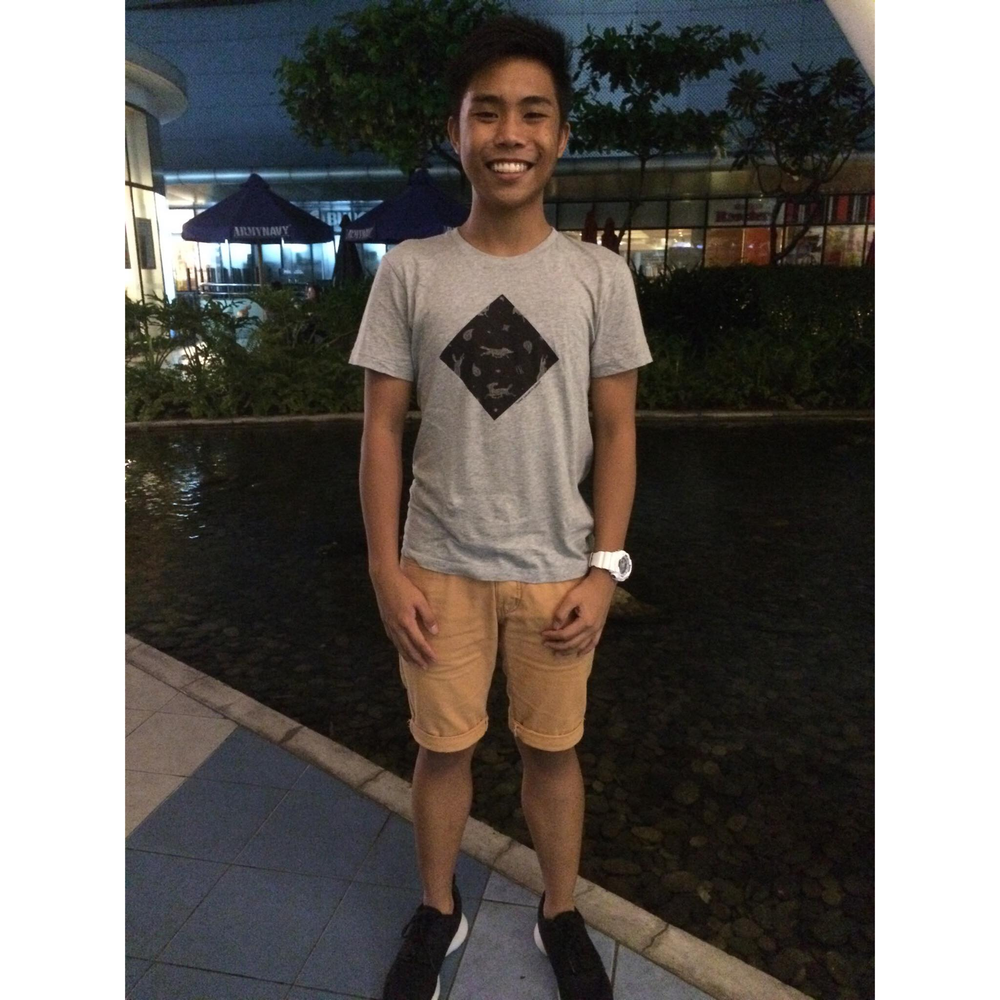

Childhood Years
The earliest memory that I remember when I was a child is that my mom scolding me because my was toe cut and bruised in a bicycle incident.1 Another one that I can remember is I got electrocuted because I was playing in a metal pole attached to the antenna of our television.2 Little did we know that there is a live wire connected to that pole I got electrocuted but fortunately I did not receive any physical damage that time.3 When I was in grade school the school bus left me because they thought I was getting picked up by my mom I remember crying to the school maintenance and asking the school guard if I can text my mom to come pick me up it was 5 pm that time then I ate my nisin cup noodle dinner until my titos arrived at 7:30 pm.4 I spent most of the time inside our house rather than playing with the kids outside since my mom was a little paranoid about people that time.5 My parents gave me a PSP which started my gaming hobby up usingtil today.6 I really liked playing Naruto and Dragon Ball whole day.7 Although sometimes I would sneak out of our house to play with kids in the nearby houses risking to get scolded when I get home but honestly it was worth it.8 In studying I studied in the city while we were living in the barrio which is one hour more or less travel time from the school.9 I have to wake up at 5 am to be picked up at 6 am by my school bus.10 I did transfer to the city school when I was grade three and that was the first time I experienced being bullied.11 I got enrolled in Kumon which is a pleasant yet annoying experience.12 It is nice because they teach you how to solve mathematical equations with discipline but at the same time it eats up your time to play.13 I learned woodworking when I was in grade four but all we had to do was sand down the wood to have a fine finish then using stikwell to glue the wood together.14 When we had a field trip in Manila that was the first time I watched a musical, It was Cinderella and I that is the only thing I remember in all the field trips that I had in grade school.15 This is the stage where I discovered that carbonara is better than spaghetti.16 My group in TLE was tasked to cooked carbonara and I helped, then we had a taste and made me realize that carbonara is a superior pasta than the Filipino all-time favorite spaghetti.17 Of course, when we are in grade school older people will always ask what do we want to do when we grow up and I only have one answer.18 I was a little kid with the dream of being a scientist that will create a machine that can clean polluted air.19 This made me realize that when I was a kid a want to make the world a better place.20
Teenage Years
Teenage years started when I was in grade 7.1 My mother was less strict comparing to my childhood years but still strict nonetheless.2 I started playing defense of the ancients with my cousins in a laptop back at our grandmother’s house.3 Then an internet café opened up in our barangay which started my enthusiasm in playing online based game.4 My cousin and I will play with people who are tambay in the café and bet on who is going to when in short, I started to gamble but in small amounts and RC Cola.5 This continued until my second year in high school.6 In third year, I switched internet café because I need faster internet so I frequently went to the bayan internet café it’s nice because of the faster internet plus the aircon.7 Then I discovered that this certain internet café is selling pirated movies and series so this is what started my interest in movies, anime, and cartoons.8 In vacations, we often stay at our aunt’s house in Taguig and there we also go out of town in Batangas or in Pangasinan to have a dip in beaches or swimming pool.9 This is the time I learned how to swim properly.10 I didn’t learn by swimming lessons but by fear my titos tossing me into the deep part of the beach and let me swim by myself until I reach them It was scary yet memorable lesson in this part of my life.11 Then later I got hooked into bicycle not the mountain bikes that are in trend today but the old school BMX.12 I will use that bike to travel 15 kilometers because I have to buy a small part of that bicycle then do this every weekend.13 As graduation in junior high comes close, I forgot about my bicycle but It was a fun time and a good time.14 Then I got admitted in Manila after junior high. I got excited because of the new environment and being roommates with my friends from junior high.15 I met different kind of people in the Metro.16 This made my thinking broader since I met people with completely different beliefs than mine.17 Especially those who have vices and tattoos that are shunned by Filipino society.18 These differences did not matter much since I was thought that there are different people out there and that doesn’t mean that they are to be hated.19 Metro made me improve my insights about situations and people it is true that if you want to improve your thinking in general you have to go out of your comfort zone.20

College Years
When I enrolled in University of the East, I expected it to be a speedrun meaning that I get to take classes no distractions then graduate without any making connections. 1 I was wrong to assume to not get hooked up in college type hobbies like drinking, playing billiards, and other things related to having happy hours. 2 Every day after class, my friends and I go to the billiard place since we have a half day schedule we play until noon then go home. 3 My gaming hobby has improved and I got a decent gaming PC from my parents. 4 Then I get to play with my friends in Rainbow Six game. 5 Rainbow six is a tactical shooting games between 10 players that you can defuse or defend the bomb. 6 Then when weekend comes, we go on a night out with my friends and since my mom is less strict than before she lets me go whenever I want but I just need to make sure I’ll go home safe. 7 I got into mechanical keyboard which is a wallet breaker for me. 8 Mechanical keyboards are fun when you have the means to buy it. 9 You can customize the feeling, sound, and design to your own liking. 10 That’s why it is very know to people who are in the IT industry since we mainly type codes for work and school. 11 I also got into plastic model, Gundams. 12. They are very fun to make yet so tedious to do since you need to cut out the parts and shave the extra plastic to make it look real. 13 When you finish, it feels so satisfying to look at and make it pose in accordance to the anime scenes. 14 I learned to drive when second semester started. 15 It was really fun to drive around metro minus the traffic since you can control the time you need to leave point A to arrive at point B. 16 Then pandemic happened and we need to go home to our province again to give my mom at least a small peace of mind.17 We stayed in our grandmother’s home for a while since they have internet but we came back to our family home after the internet was connected in the house. 18 Then for I am attending my online classes in our home in the province, fortunately we went back to Metro last year to get my PC to have a more comfortable way in attending the class. 19 In the past few months, I’ve been also helping my parents in their livestock business. 20 It’s really nice to be in the province since the cost of living is cheaper than Metro but I really like the adventurous vibe of Manila.21